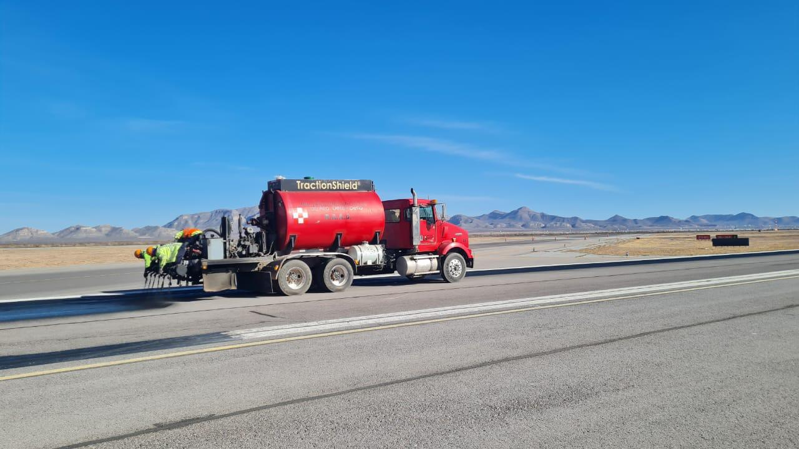

← Volver a Inicio


R.A.A.D. Type S
Este tratamiento superficial está diseñado para proteger e impermeabilizar pavimentos asfálticos, proporcionando una superficie de rodamiento cómoda y segura en carreteras, zonas urbanas y pistas de aeropuertos.
Desarrollado en Estados Unidos por Carbonyte Inc., incorpora nanotecnología en su estructura, lo que permite el uso de asfaltos de muy baja penetración junto con diversos tipos de polímeros y cerámicas. Esto le confiere una durabilidad excepcional y una resistencia superior al tráfico intenso y pesado, garantizando pavimentos más seguros y de larga vida útil.
Usos Recomendados
- Para zonas de operación de baja a regular como rodajes, vialidades lado tierra, vialidades internas, vialidades en plataforma y tercios laterales de pista.
Beneficios
- No contiene Hidrocarburos aromáticos policíclicos (No-PAHs)
- Alto punto de reblandecimiento
- Mejor ductilidad en climas fríos
- Seguro para manejar y almacenar
- Muy buena resistencia química, resistencia a derrames
- Debido a su alto peso molecular, tiene una muy buena cohesión y alta resistencia a la abrasión
- Rápido tiempo de secado y curado, generalmente 2 horas
- Alta resistencia a rayos infrarrojos y UV
- Protege a los pavimentos del desgaste y factores ambientales
- Recomendado para zonas de bajo tránsito, tercios laterales de pista y márgenes
- No disminuye la fricción al contener minerales en su estructura interna y mantiene la macrotextura
Ficha Técnica
Descargar PDFGalería
